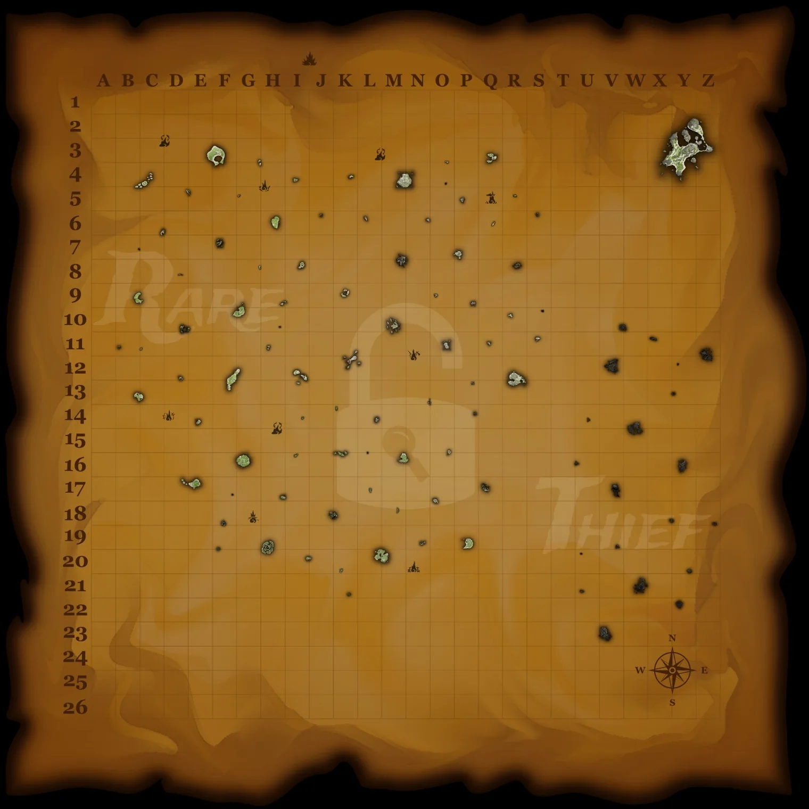

The Gilded Ledger
Find what your loot is worth, where to earn it, and what to collect next.
Finding the next Gold Rush…
Treasure ledger
High Seas base values. Grades apply to an eligible matching company or Reaper sale. Open an item for all five grades.
World events
Choose an encounter to see possible loot and how to find it.
Events calendar
My haul
Your manifest stays on this device. Totals use base value; select an item to inspect emissary payouts. Unknown values are excluded.
Cosmetic chest
Search clothing, equipment, weapons, ship cosmetics and pets. Open an item to see its price source and unlock requirements.
Commendations
See what to do, the grades to reach, and the cosmetic rewards each commendation unlocks. Imported progress and manual notes are labeled separately.
My pirate
Sea chart
Find islands by name or grid square. Pick a marker to see local details and Tall Tale stops.

Drag to pan. Zoom in to reveal island names. Off-chart locations are in the list. Chart artwork by Rare Thief.
Island coordinates and listed objectives are sourced from the Sea of Thieves Wiki. Possible stops depend on the clues your crew receives.